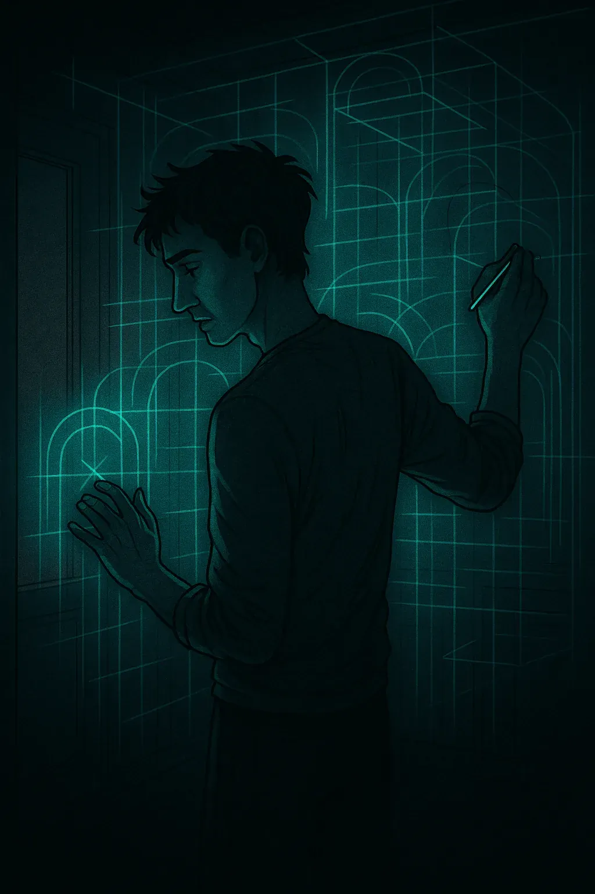
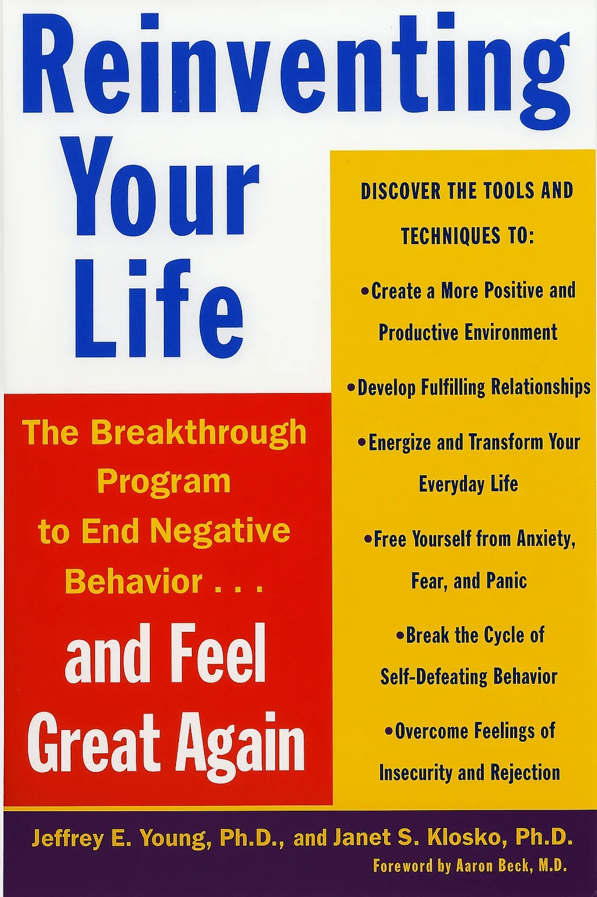

Abandonment: Fear that people I depend on will leave. In addiction, I might cling to unhealthy partners or sabotage closeness before they can hurt me.
Understanding the hidden beliefs that shaped your survival — and how to outgrow them
During my most recent stay in treatment, my caseworker handed me a questionnaire and asked if I wanted to try it. I flipped through it, and the second I saw questions about childhood, I could feel my heartbeat in my jaw. I handed it back and said, "No. I'm not ready."
It wasn't the questionnaire I was avoiding. It was the border crossing it represented: from spending my entire adult life insisting my childhood didn't leave a mark, to sitting down and actually checking. That wasn't a small step. It felt like opening a door I'd kept barricaded for thirty years — knowing the final boss was waiting on the other side.
If this feels heavy, that's the right response. Schema work isn't a gentle journaling prompt. Sometimes beginning is the whole act of courage. The questionnaire can wait. The decision to look can't.
Schema work belongs to everyone. These patterns show up in families, workplaces, friendships, relationships, and leadership — not only in trauma or addiction. We all form blueprints early in life. Schema work gives you the tools to examine yours — and decide which parts still deserve to be there.
What if those patterns weren't random? What if they were forged long before I ever picked up a drink or a drug — and every time I relapsed, I was just following a script I didn't know I had?
For years I felt like I was living on autopilot. No matter how hard I tried, I couldn't override it. I was constantly reacting, never choosing. In addiction that meant cycling through the same outcomes on a loop: mornings loaded with regret, days in damage control, evenings convincing myself it would be different next time. I genuinely believed these reactions were just who I was. The thought that they might be patterns I had learned — and could therefore unlearn — had never seriously occurred to me.
This is where Life Traps — also called schemas — come in. They're not passing thoughts or bad habits. They're deep, enduring beliefs about myself, others, and the world — formed when core emotional needs went unmet in childhood: safety, affection, validation, guidance, the simple freedom to exist without having to earn it. Those early gaps became the blueprint for how I interpreted everything as an adult.
And until I understood them, I kept playing out the same script without realizing I was following one.
These descriptions are drawn from Young & Klosko's Reinventing Your Life and are offered here for self-reflection only — not as a diagnostic tool. If something resonates, that's a starting point for personal exploration, not a clinical conclusion. A schema-informed therapist can help you work with what surfaces.
Each lifetrap below includes a brief note on how it may show up in addiction or recovery. Some will hit immediately. Others might not land until later — or until something else shifts first. The point isn't to collect them. It's to notice which ones have the strongest pull right now.
Abandonment: Fear that people I depend on will leave. In addiction, I might cling to unhealthy partners or sabotage closeness before they can hurt me.
Mistrust and Abuse: Belief that others will lie, betray, or exploit me. In addiction, I keep my guard up, isolate, or gravitate toward people who reinforce my mistrust.
Emotional Deprivation: Belief that my need for love, care, and attunement will never really be met. In addiction, I may look stable on the outside while running on empty inside — reaching for substances or chaos because nothing else has ever felt like enough.
Social Exclusion: Feeling fundamentally different, or like I don't quite belong anywhere. In addiction, even recovery spaces don't fix it. I can be in a room full of people who've been through the same things and still feel like I'm watching from behind glass.
Dependence: Belief that I cannot handle life without constant help or direction. In addiction, I hand my power to others, then resent them for it. Or I rebel, fall apart, and confirm what I already believed: that I can't manage on my own.
Vulnerability: Conviction that something bad is always about to happen. Not a passing worry — a baseline. The threat doesn't have to be real to feel imminent. In addiction, substances become the only thing that reliably turns the alarm down.
Defectiveness: Core shame that I am broken, unlovable, or fundamentally flawed. In addiction, I wear masks, hide, or sabotage success because deep down I don't believe I deserve it.
Failure: Belief that I will never measure up or succeed. In addiction, I give up before trying, convinced I'll blow it anyway. The schema doesn't need to be right. It just needs to go unchallenged long enough to act like it is.
Subjugation: Belief that I must suppress my needs or face rejection or punishment. In addiction, I say yes when I mean no, let resentment build, then escape through substances.
Unrelenting Standards: The belief that nothing I do is ever quite enough. In addiction, I overwork, push through, perform competence I don't feel — and use substances to survive the gap between who I'm pretending to be and how I actually feel.
Entitlement: Belief that rules don't apply to me, paired with a genuine difficulty respecting limits. In addiction, I push boundaries, rationalize destructive choices, and feel strangely exempt from consequences. Right up until I'm not.
It's also worth knowing that schemas don't operate in isolation. Working on one often loosens others. Sometimes starting with the one that feels most manageable — or even its "ugly cousin" when the biggest feels untouchable — is enough to shift the whole structure. You don't have to dismantle everything at once.
Addiction rarely starts with the substance. It's usually the final link in a much longer internal chain: trigger, schema, coping style — and only then the behaviour. Most treatment targets the last link. Schema work asks what the first link was — because that's where the chain can actually be broken.
Trigger: A friend doesn't text back.
Schema Activated – Abandonment: "They're pulling away. I'm going to be left."
Coping Style – Escape: "I can't hold this feeling. I need to shut it down."
Addictive Behaviour: Drinking to dull the panic, the loneliness, or the specific terror of being "too much" for someone to stay.
The substance wasn't the problem that started this. It was the solution that showed up at the end of a process that was already well underway.
Schemas formed for a reason — and that reason made sense given what was happening at the time. The work isn't to erase them. It's to weaken their grip enough that they stop running the show automatically. The brain changes through repeated, intentional practice. Not insight alone. Not willpower. Repetition — over enough time, with enough support.
Recognize: Catch the schema as it activates. Name the story, the sensation, the pull toward the old response. You can't interrupt what you haven't noticed.
Challenge: Ask: "Is this actually happening right now — or is this my past replaying itself through a present that just looks similar enough to trigger it?"
Replace: Choose a response aligned with your values — with who you're building toward — rather than one dictated by what you survived. Do it even when it feels wrong. Especially when it feels wrong.
Repeat that cycle enough times and the schema loses its automatic authority. It doesn't disappear — but it stops being the only voice in the room. That's the shape of the work. The place to start is simpler than you think: pick the one schema from the list above that had the strongest pull. Not the most interesting one. The one that made you slightly uncomfortable to read. That's the thread worth pulling.

Reading about lifetraps and recognizing them in your own life are two very different experiences. The first feels intellectual. The second tends to feel like someone turned on a light in a room you've been navigating in the dark for years.
The descriptions above aren't a diagnostic tool — they're a mirror. If something in that list resonated, that's not a label. It's a signal that something worth exploring is closer to the surface than you may have realized. You don't need a score or a questionnaire to confirm what you already felt reading it.
A simple place to start:
Go back to the list. Pick the one schema that didn't just
make sense — the one that made you slightly uncomfortable to read.
Not the most relatable. The one with the faint pull of recognition you
almost scrolled past.
Write it down. Then ask: Where do I see this playing out right now —
in a relationship, a pattern, a reaction I keep having?
That's the thread. You don't need to unravel the whole sweater today.
Pulling one thread carefully is often enough to show you the shape of the rest.
The descriptions here are doorways, not destinations. For anyone who wants to go considerably further — the book below is where this work actually lives. It was written for people doing this themselves, not clinicians reading about it from a distance. And for anyone who finds that the recognition hits hard, a schema-informed therapist can take you places a page never could.

This is the book this page is built on. I was handed it in treatment and kept it — one of maybe three books from that period I still have. Reading it was the first time I saw my own patterns described clearly enough that I couldn't argue my way out of recognizing them. That's a specific kind of uncomfortable. It's also the kind that moves things.
It was written for people doing this work in their own lives — not as a clinical manual, but as a practical guide with enough grounding in the research to be taken seriously. If the schema descriptions above landed for you, this is where the actual work begins. A page can create recognition. The book can take you somewhere with it.
Not an affiliate link. A resource that helped me — shared here in case it helps you too.
Follow the next step in order, or branch out into related topics.